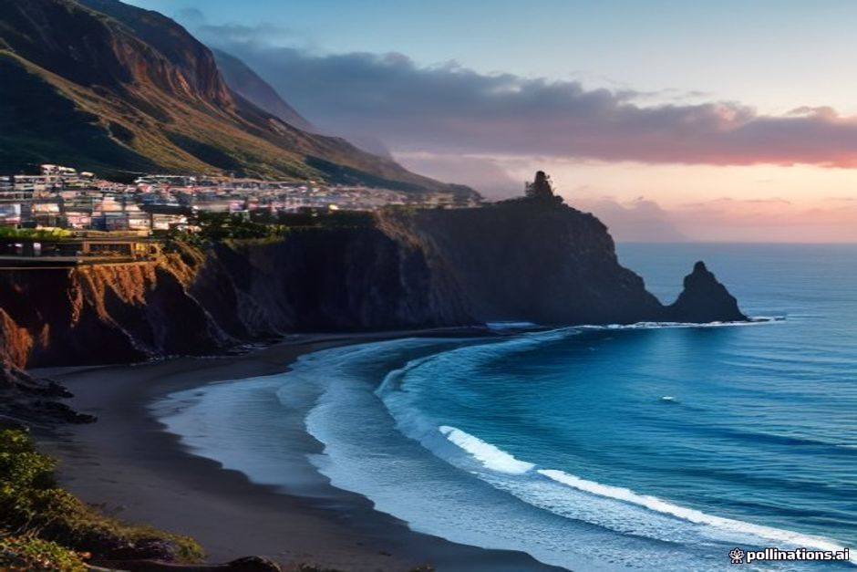
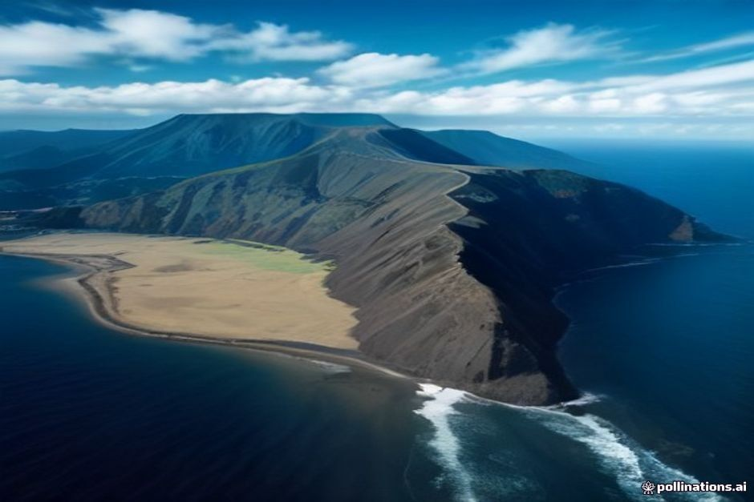

Fly into Madeira expecting the pale sand of the Algarve or the Canaries and the coastline looks almost wrong — cliffs instead of dunes, rock pools instead of shallows, and one lone cove of sand the colour of wet charcoal. None of it is an accident. Every metre of this coastline is built from the same material: the island itself.
Why does Madeira have black sand?
Madeira's sand is black, scarce or imported because the island is a volcano, not a fragment of continent. There's no shallow shelf of pale quartz being ground down offshore, the way there is on a mainland coast — only dark basalt lava, which breaks into black or dark-brown grains where it does break down at all. Where the rock hasn't worn down into sand, the coast is cliffs, boulders and flat volcanic shelves instead, which is why so much of Madeira's "beach" experience is actually a natural pool cut into the rock rather than a stretch of sand to lie on.

Is Madeira a volcanic island?
Yes, entirely. Madeira is the summit of a huge shield volcano built up by hotspot activity in the Atlantic, with underwater eruptions beginning tens of millions of years ago and the first land breaking the surface roughly 5 to 7 million years ago. Later eruptions stacked lava flow on lava flow — mostly alkaline basalts — until the island reached the shape it has today. The last volcanic activity on the main island is thought to date back only a few thousand years, which in geological terms makes Madeira young: sharp, steep and not yet worn down into the gentler curves of an older landscape.
Where is Madeira's only natural black sand beach?
Prainha, a small cove near Caniçal at the island's eastern tip, close to the Ponta de São Lourenço nature reserve. It's the one place on the main island where the sea has genuinely broken volcanic rock down into a proper sandy beach — around 80 metres of dark, coppery-black sand, backed by arid, ochre-coloured cliffs that look almost nothing like the green, forested interior a short drive away. The landscape out here is drier and starker than the rest of Madeira for the same volcanic reason: less rainfall, older exposed rock, and a coastline shaped by wind as much as water.
Why doesn't Madeira have more natural sandy beaches?
Because basalt is dense, slow to erode and the island hasn't had the time — or the gently sloping shoreline — needed to grind large amounts of it into sand. Most coastal towns instead sit on pebbles, boulders or bare volcanic rock, and where the coast is swimmable at all it's usually because a lava flow cooled into a shelf or hollow that the sea can fill, not because sand collected there. It's part of why so much of the coastline photographs as cliffs first and beach second — Madeira genuinely doesn't have much sand to offer.
Why do Calheta and Machico have golden sand?
Because it was shipped in. Calheta opened in 2004 as Madeira's first artificial beach, built behind breakwaters and filled with golden sand imported from Morocco, and Machico's beach followed the same formula not long after — smaller, but built the same way, with breakwaters holding the imported sand in place against the Atlantic swell. Both are genuinely pleasant, gently sloping and easy for families, but neither is a natural feature of the island; they're engineered solutions to the same basalt problem described above, and a handful of smaller resorts have since copied the idea.
Are Madeira's natural pools related to the black sand?
Yes — they're the same volcanic story with a different outcome. At Porto Moniz and Seixal on the north coast, old lava flows met the sea and cooled into rock shelves and hollows, which now fill with clear Atlantic seawater to form the island's famous natural swimming pools. Where a lava flow at Prainha broke down into sand, these flows instead set into rock solid enough to hold its shape — so instead of a sandy beach, you get a series of volcanic pools with the ocean topping them up through gaps in the stone.

Can you see the volcanic coastline from the water?
Better than from land, in most places. Cabo Girão's layered basalt wall, one of the highest sea cliffs in Europe, only really reveals its scale from below, and the same dark rock that fails to make a beach at most points along the south coast opens into sheltered coves you can swim straight into. A private boat trip with Chifbay runs this exact stretch — past Câmara de Lobos and Cabo Girão to a swim stop at Fajã dos Padres, a volcanic cove reachable properly only by sea or cable car.
Every cliff, cove and pool on this coast is the same rock, just interrupted at a different point in its slow collapse into the Atlantic.
Knowing why the sand looks the way it does changes how you read the rest of the coastline — the black cove at Prainha, the imported gold at Calheta, the rock pools at Porto Moniz, and the sheer cliffs in between are all one story, not four separate ones. Out on the water with Chifbay, that story is the view for the entire trip.